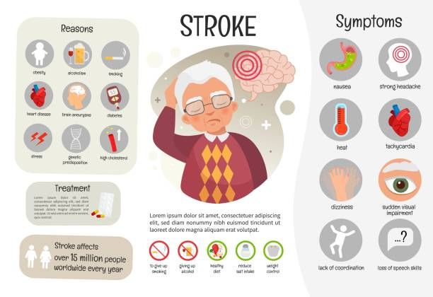
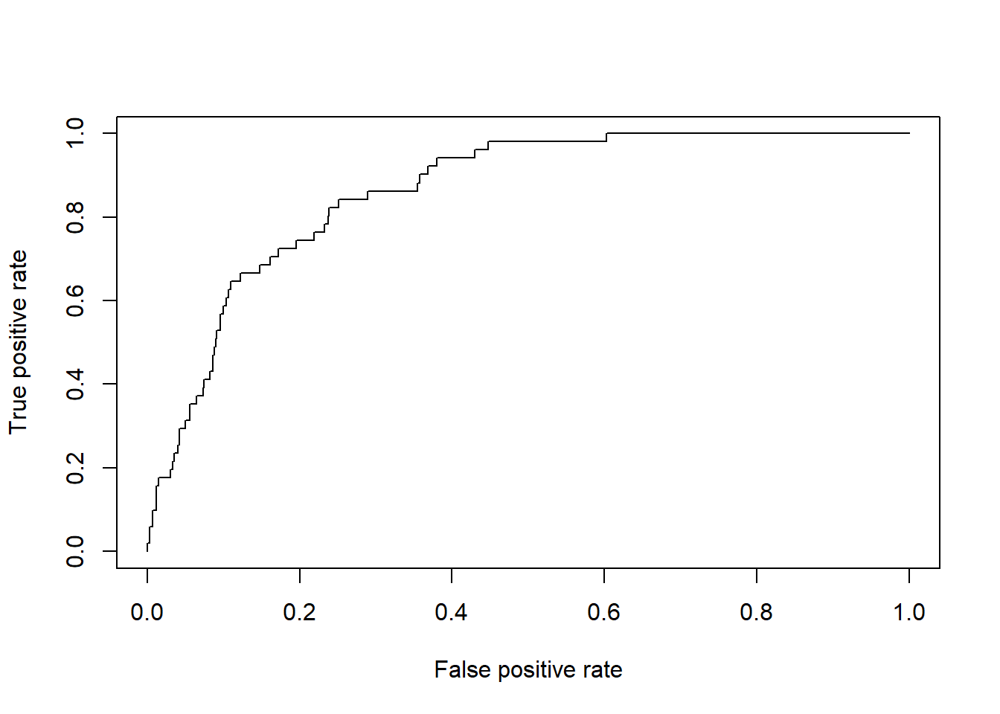
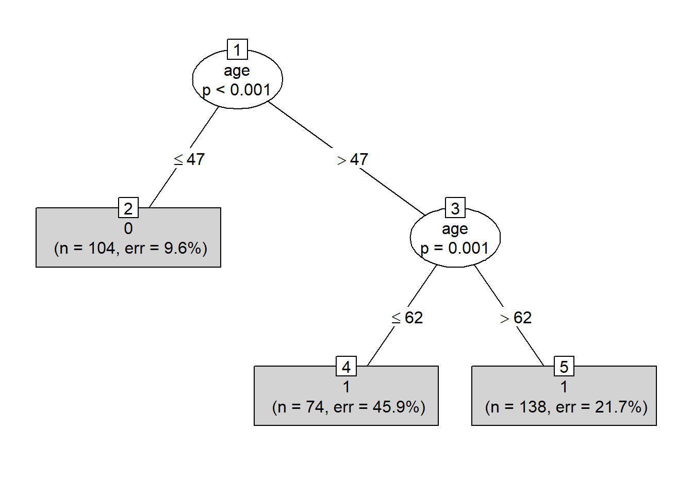

Disini saya akan load library yang akan kita gunakan sebagai
pembuatan model Naive Bayes, Decision Tree,
dan Random Forest.Saya akan menggunakan data rumah sakit
mengenai pasien apakah pasien tersebut terkena stroke atau tidak.
Berikut ini adalah keterangan datanya :
id: id pasiengender: “Pria”, “Wanita” atau “Lainnya”age: usia pasienhypertension: 0 jika pasien tidak memiliki hipertensi,
1 jika pasien memiliki hipertensiheart_disease: 0 jika pasien tidak memiliki penyakit
jantung, 1 jika pasien memiliki penyakit jantungever_married: “Tidak” atau “Ya”work_type: “anak-anak”, “Govt_jov”, “Tidak
pernah_bekerja”, “Swasta” atau “Wiraswasta”Residence_type: “Pedesaan” atau “Perkotaan”avg_glucose_level: tingkat glukosa rata-rata dalam
darahbmi: indeks massa tubuhsmoking_status: “sebelumnya merokok”, “tidak pernah
merokok”, “merokok” atau “Tidak diketahui”*stroke: 1 jika pasien mengalami stroke atau 0 jika
tidaklibrary(dplyr)##
## Attaching package: 'dplyr'## The following objects are masked from 'package:stats':
##
## filter, lag## The following objects are masked from 'package:base':
##
## intersect, setdiff, setequal, unionlibrary(e1071)
library(caret)## Loading required package: ggplot2## Loading required package: latticelibrary(rsample)##
## Attaching package: 'rsample'## The following object is masked from 'package:e1071':
##
## permutationslibrary(randomForest)## randomForest 4.7-1.1## Type rfNews() to see new features/changes/bug fixes.##
## Attaching package: 'randomForest'## The following object is masked from 'package:ggplot2':
##
## margin## The following object is masked from 'package:dplyr':
##
## combinestroke <- read.csv("healthcare-dataset-stroke-data.csv")
head(stroke)Karena disini saya tidak menggunakan id sebagai data
untuk dianalisis, maka akan saya buang kolom tersebut.Dan variabel yang
ada pada data stroke diubah menjadi factor dan
di pipping dengan nama stroke_clean.
dim(stroke)## [1] 5110 12glimpse(stroke)## Rows: 5,110
## Columns: 12
## $ id <int> 9046, 51676, 31112, 60182, 1665, 56669, 53882, 10434~
## $ gender <chr> "Male", "Female", "Male", "Female", "Female", "Male"~
## $ age <dbl> 67, 61, 80, 49, 79, 81, 74, 69, 59, 78, 81, 61, 54, ~
## $ hypertension <int> 0, 0, 0, 0, 1, 0, 1, 0, 0, 0, 1, 0, 0, 0, 0, 1, 0, 1~
## $ heart_disease <int> 1, 0, 1, 0, 0, 0, 1, 0, 0, 0, 0, 1, 0, 1, 1, 0, 1, 0~
## $ ever_married <chr> "Yes", "Yes", "Yes", "Yes", "Yes", "Yes", "Yes", "No~
## $ work_type <chr> "Private", "Self-employed", "Private", "Private", "S~
## $ Residence_type <chr> "Urban", "Rural", "Rural", "Urban", "Rural", "Urban"~
## $ avg_glucose_level <dbl> 228.69, 202.21, 105.92, 171.23, 174.12, 186.21, 70.0~
## $ bmi <chr> "36.6", "N/A", "32.5", "34.4", "24", "29", "27.4", "~
## $ smoking_status <chr> "formerly smoked", "never smoked", "never smoked", "~
## $ stroke <int> 1, 1, 1, 1, 1, 1, 1, 1, 1, 1, 1, 1, 1, 1, 1, 1, 1, 1~Pada tabel bmi terdapat sebanyak 210 missing value.
stroke %>% filter(bmi == "N/A")Saya menggunakan filter NA untuk menfilter missing value yang terdapat pada kolom bmi, pada kolom tersebut sebanyak 210 kolom terdapat missing value.Pada kolom bmi dijadikan tipe data numeric dan stroke, gender, ever_married, work_type, residence_type, smoking_status menjadi factor.
stroke_clean <- stroke %>% filter(bmi != "N/A") %>%
select(-id) %>%
mutate(bmi = as.numeric(bmi),
stroke = as.factor(stroke)) %>%
mutate_at(vars(hypertension, heart_disease),as.factor) %>%
# gender, ever_married, work_type, residence_type, smoking_status
mutate_if(is.character, as.factor)
glimpse(stroke_clean)## Rows: 4,909
## Columns: 11
## $ gender <fct> Male, Male, Female, Female, Male, Male, Female, Fema~
## $ age <dbl> 67, 80, 49, 79, 81, 74, 69, 78, 81, 61, 54, 79, 50, ~
## $ hypertension <fct> 0, 0, 0, 1, 0, 1, 0, 0, 1, 0, 0, 0, 1, 0, 1, 0, 0, 1~
## $ heart_disease <fct> 1, 1, 0, 0, 0, 1, 0, 0, 0, 1, 0, 1, 0, 1, 0, 0, 0, 0~
## $ ever_married <fct> Yes, Yes, Yes, Yes, Yes, Yes, No, Yes, Yes, Yes, Yes~
## $ work_type <fct> Private, Private, Private, Self-employed, Private, P~
## $ Residence_type <fct> Urban, Rural, Urban, Rural, Urban, Rural, Urban, Urb~
## $ avg_glucose_level <dbl> 228.69, 105.92, 171.23, 174.12, 186.21, 70.09, 94.39~
## $ bmi <dbl> 36.6, 32.5, 34.4, 24.0, 29.0, 27.4, 22.8, 24.2, 29.7~
## $ smoking_status <fct> formerly smoked, never smoked, smokes, never smoked,~
## $ stroke <fct> 1, 1, 1, 1, 1, 1, 1, 1, 1, 1, 1, 1, 1, 1, 1, 1, 1, 1~Mari kita mengecek lagi missing value pada data stolen_clean.Nah sekarang missing value sudah kita drop dan tipe data sudah disesuaikan.Jadi mari kita lanjut ke tahap EDA.
colSums(is.na(stroke_clean))## gender age hypertension heart_disease
## 0 0 0 0
## ever_married work_type Residence_type avg_glucose_level
## 0 0 0 0
## bmi smoking_status stroke
## 0 0 0head(stroke_clean)Terlihat diatas bahwa data yang hilang sudah diatasi.
Pada kolom stroke jika bernilai 1 berarti pasien tersebut mengalami stroke dan 0 berarti tidak.
prop.table(table(stroke_clean$stroke))##
## 0 1
## 0.95742514 0.04257486Kita akan melakukan split data stolen_clean menjadi data training dan data testing, dengan 75% data akan digunakan sebagai data training.
set.seed(100)
index <- sample(x = nrow(stroke_clean),
size = nrow(stroke_clean)*0.75)
stroke_train <- stroke_clean[index,]
stroke_test <- stroke_clean[-index,]Cek proporsi kelas target :
prop.table(table(stroke_train$stroke))##
## 0 1
## 0.95707688 0.04292312Masih terdapat data yang mayoritas itu tidak terkena stroke.Oleh karena itu disini akan dilakukan downsampling pada data stroke menggunakan function downSample.
set.seed(100)
stroke_trainDown <- downSample(x = stroke_train %>% select(-stroke),
y = stroke_train$stroke,
yname = "stroke")
dim(stroke_trainDown)## [1] 316 11dim(stroke_train)## [1] 3681 11Proporsi tabel stroke_trainDown pada kolom stroke antara
positif stroke dan negatif sebanyak 0,5.
prop.table(table(stroke_trainDown$stroke))##
## 0 1
## 0.5 0.5Naive_stroke <- naiveBayes(formula = stroke~.,
data = stroke_trainDown,
laplace = 1)Kita dapat menginterpretasikan masing-masing prediktor dari hasil perhitungan peluang dependennya dengan variabel target. Misal:
Prediksi class dari data test dengan function
predict():
stroke_test$pred <- predict(Naive_stroke,
newdata = stroke_test,
type = "class")
head(stroke_test)Dengan menggunakan data test dan positivenya itu adalah stroke.
confusionMatrix(data = stroke_test$pred,
reference = stroke_test$stroke,
positive = "1")## Confusion Matrix and Statistics
##
## Reference
## Prediction 0 1
## 0 784 7
## 1 393 44
##
## Accuracy : 0.6743
## 95% CI : (0.6473, 0.7004)
## No Information Rate : 0.9585
## P-Value [Acc > NIR] : 1
##
## Kappa : 0.1145
##
## Mcnemar's Test P-Value : <0.0000000000000002
##
## Sensitivity : 0.86275
## Specificity : 0.66610
## Pos Pred Value : 0.10069
## Neg Pred Value : 0.99115
## Prevalence : 0.04153
## Detection Rate : 0.03583
## Detection Prevalence : 0.35586
## Balanced Accuracy : 0.76442
##
## 'Positive' Class : 1
## Tipe raw pada predict untuk mengembalikan nilai sebagai probabilitas.
predStroke_prob <- predict(Naive_stroke,
newdata = stroke_test,
type = "raw")Mempersiapkan data prediksi dan data aktual dimulai dengan mensubset data yang kita inginkan yaitu stroke (1).
# menyiapkan pred vs actual
df_roc_predNaive <- data.frame(prob = predStroke_prob[,2], #subsetting probabilty stroke
label = as.numeric(stroke_test$stroke == "1")) #ambil label dari data tes
head(df_roc_predNaive)Membuat ROC dengan menyiapkan objek prediction()
stroke_test$stroke[,2] = mengambil kolom kedua yang difokuskan yaitu 1(stroke).
library(ROCR)
# buat objek prediction
roc_pred <- prediction(predictions = df_roc_predNaive$prob,
labels = df_roc_predNaive$label)
# ROC curve
plot(performance(prediction.obj = roc_pred,
measure = "tpr",
x.measure = "fpr")) Dengan membentuk L terbalik maka dapat disimpulkan bahwa model kita lumayan baik dalam memprediksi apakah pasien tersebut mengalami stroke atau tidak.
# nilai AUC
votes_auc <- performance(prediction.obj = roc_pred,
measure = "auc")
str(votes_auc)## Formal class 'performance' [package "ROCR"] with 6 slots
## ..@ x.name : chr "None"
## ..@ y.name : chr "Area under the ROC curve"
## ..@ alpha.name : chr "none"
## ..@ x.values : list()
## ..@ y.values :List of 1
## .. ..$ : num 0.863
## ..@ alpha.values: list()votes_auc@y.values## [[1]]
## [1] 0.8626285Dengan nilai AUC sebesar 0,83 dapat disimpulkan nilai AUC cukup baik karena nilai AUC terbaik adalah mendekati nilai 1.
Tujuan Decision Tree yaitu memisahkan data menjadi kelompok-kelompok kecil berdasarkan variable tertentu sehingga dihasilkan data yang homogen atau homogenitas tinggi. Ukuran homogenitas dapat dikuantifikasi dengan nilai entropy.
Visualisasi Decision Tree:
library(partykit)## Loading required package: grid## Loading required package: libcoin## Loading required package: mvtnormmodel_stroke <- ctree(formula = stroke~.,
data = stroke_trainDown)Struktur Pohon :
# print struktur pohon
plot(model_stroke, type = "simple")
# prediksi kelas di data test
predStroke_Tree <- predict(object = model_stroke,
newdata = stroke_test,
type = "response")
# confusion matrix data test
confusionMatrix(predStroke_Tree, reference = stroke_test$stroke, positive = "1")## Confusion Matrix and Statistics
##
## Reference
## Prediction 0 1
## 0 677 3
## 1 500 48
##
## Accuracy : 0.5904
## 95% CI : (0.5623, 0.6181)
## No Information Rate : 0.9585
## P-Value [Acc > NIR] : 1
##
## Kappa : 0.0912
##
## Mcnemar's Test P-Value : <0.0000000000000002
##
## Sensitivity : 0.94118
## Specificity : 0.57519
## Pos Pred Value : 0.08759
## Neg Pred Value : 0.99559
## Prevalence : 0.04153
## Detection Rate : 0.03909
## Detection Prevalence : 0.44625
## Balanced Accuracy : 0.75818
##
## 'Positive' Class : 1
## Jika dibandingkan nilai Recall antara menggunakan model Naive Bayes dan Decision Tree, nilai recall lebih besar menggunakan Decision Tree sebesar 0,99040 dan Naive Bayes sekitar 0,98822.Dan antara nilai Accuracy pada Naive Bayes dan Decision Tree masing-masing sebesar 0,6498 dan 0,7077 .Saya memilih metriks Recall karena ingin mengurangi pasien yang ternyata sakit tetapi di prediksi tidak sakit stroke.